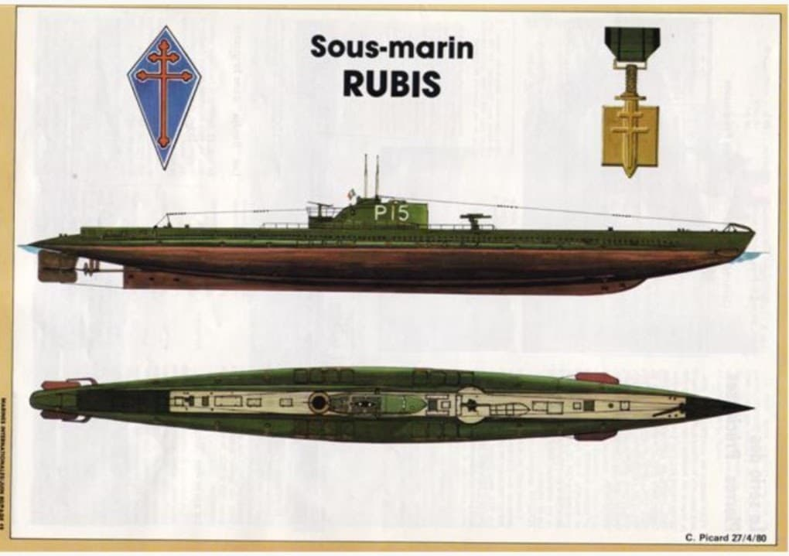

Introduction
Les Forces Navales Françaises Libres (FNFL) sont la marine militaire de la France Libre. Créées à Londres en juillet 1940 par le vice-amiral Émile Muselier, elles regroupent les navires, les marins et les volontaires qui refusent l’armistice et choisissent de continuer la guerre aux côtés des Alliés. Les FNFL montrent que la France n’a pas disparu : elle reste présente sur les mers, elle escorte les convois, elle combat les U‑Boots et participe à la libération des ports français. Elles sont un pilier militaire de la France Libre, au même titre que les Forces françaises libres terrestres et aériennes.
Création des FNFL

Dès son arrivée à Londres en juin 1940, le vice-amiral Émile Muselier propose à Charles de Gaulle de reconstituer une marine française libre. Il est nommé à la tête des Forces Navales Françaises Libres et commence à organiser les premiers ralliements de navires : patrouilleurs, sous-marins, cargos armés, corvettes. Muselier donne aux FNFL un emblème fort : la croix de Lorraine, peinte sur les coques et les superstructures, pour marquer visuellement la rupture avec le régime de Vichy.
Émile Muselier – Fiche complète
Les premiers navires ralliés

Les premiers bâtiments ralliés à la France Libre forment le noyau initial des FNFL. Parmi eux, on trouve :
Président Houduce – Patrouilleur, utilisé pour des missions de surveillance et d’escorte. Narval – Sous-marin, engagé dans des opérations de guerre sous-marine. Rubis – Sous-marin mouilleur de mines, célèbre pour ses missions de pose de mines contre les navires allemands. Rhin – Cargo armé, utilisé pour le transport et la protection de convois. Anadyr et Capo Olmo – Navires marchands ralliés, intégrés dans la flotte de soutien.
Ces navires, parfois anciens et peu nombreux, deviennent les premiers outils de la présence française sur mer après la défaite de 1940.
Missions des FNFL
Les FNFL participent à de nombreuses opérations navales aux côtés de la Royal Navy :
Escorte des convois : protection des navires marchands contre les sous-marins allemands dans l’Atlantique et la Manche. Opérations en Méditerranée : participation à des missions de surveillance, de soutien et de combat dans une zone stratégique. Actions de renseignement : collecte d’informations sur les mouvements ennemis, les ports occupés et les routes maritimes. Débarquements et opérations spéciales : soutien à des opérations comme la prise de certains territoires et la libération de ports français.
Malgré des moyens limités, les FNFL jouent un rôle réel dans la guerre sur mer et contribuent à maintenir une présence française dans les opérations alliées.
Effectifs et organisation
Au fil du conflit, les FNFL se structurent et se renforcent :
En 1942 : – Environ 40 navires de guerre opérationnels. – Près de 3 600 marins engagés dans les FNFL. – Une flotte marchande ralliée d’environ 170 navires, dont plusieurs dizaines en service actif.
Les FNFL disposent de bases principales au Royaume-Uni, notamment à Portsmouth, ainsi que dans certains ports de l’Empire français ralliés à la France Libre. Elles sont intégrées dans la chaîne de commandement alliée tout en conservant leur identité française et leur emblème propre.
Figures majeures des FNFL
Plusieurs officiers et marins marquent l’histoire des FNFL :
Émile Muselier : fondateur et premier commandant des FNFL, architecte de la marine de la France Libre. Philippe Auboyneau : officier de marine, qui prend des responsabilités importantes dans la conduite des opérations navales. Honoré d’Estienne d’Orves : officier de marine, envoyé en mission de renseignement en France occupée, arrêté puis exécuté en 1941.
Ces figures incarnent le refus de l’armistice et la volonté de continuer la lutte, même dans des conditions difficiles.
Les FNFL dans la France Libre
Les FNFL ne sont pas isolées : elles s’inscrivent dans un ensemble plus large, celui des Forces Françaises Libres (FFL) et de la France Libre
Elles contribuent à donner une crédibilité militaire à la France Libre, en montrant que la France continue la guerre sur terre, dans les airs et sur mer. La présence de navires français dans les convois alliés, arborant la croix de Lorraine, est un symbole fort pour les marins, les civils et les Alliés.
France Libre – Fiche complète
Fin des FNFL et héritage
À la fin de la guerre, en 1945, les FNFL sont progressivement intégrées dans la marine nationale restaurée. La France retrouve sa souveraineté et ses institutions, et la marine française se reconstitue sur une base unifiée.
L’héritage des FNFL est double :
– Militaire : elles ont maintenu une présence française sur mer, participé à des opérations importantes et formé des marins expérimentés. – Symbolique : elles ont montré que la France n’avait pas renoncé, que des hommes et des navires continuaient la lutte sous le drapeau de la France Libre et la croix de Lorraine.